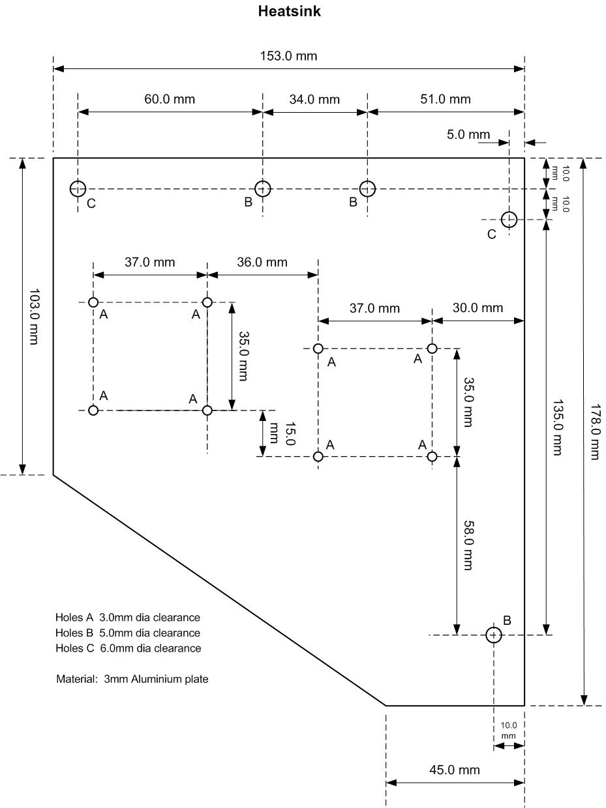
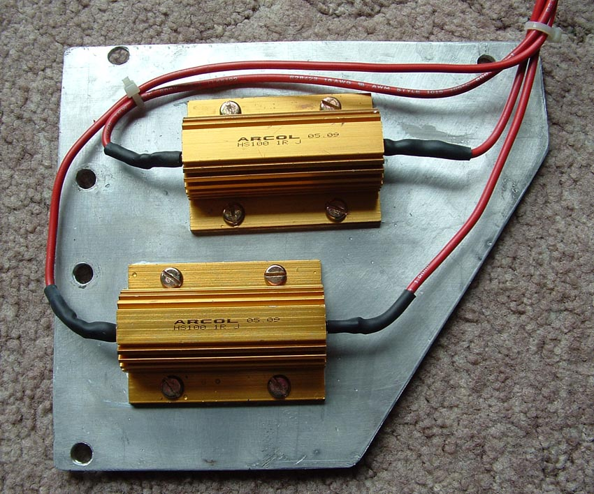
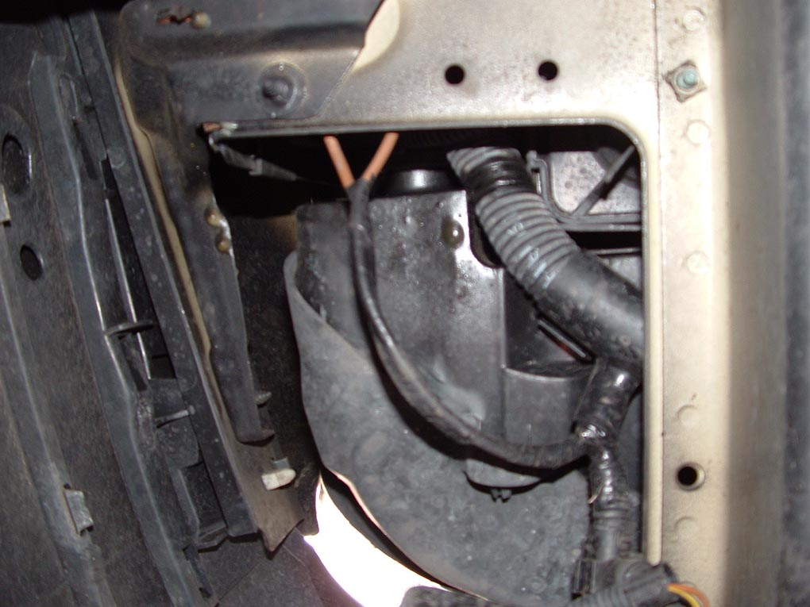
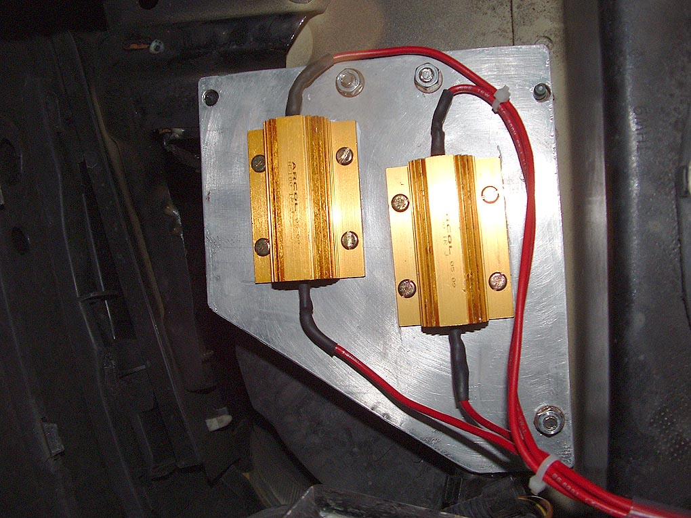
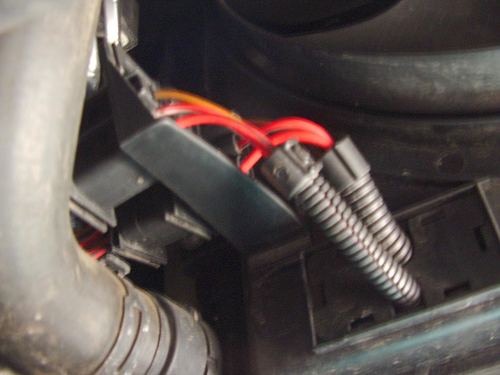
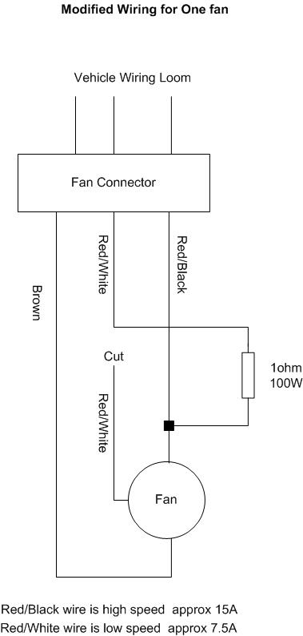

This fan repair modification was developed for a 2002 model V5 Golf, it will probably be OK for other Golf models especially the V6.
It is intended for use when the low speed resistors inside the fans have failed, leaving the high speed mode working.
I would guess that mounting holes etc may need adjustment depending on model, check dimensions before starting.
This quick guide is intended for those with some electrical wiring experience.
(1) Purchase 2 off 1ohm 100W aluminium clad resistors RS part number 188-087 or Farnell part number 652-453
(2) Manufacture heatsink to attached drawing, not forgetting to check hole positions etc first.

(3) Smear heatsink compound over back of the resistors and fix resistors to heatsink using M3.5 screws and nuts.
(4) Solder approx 30 inches of wire to each resistor termination and cover the bare termination with heatshrink to provide some protect against the elements and accidental shorts. The wire has to carry approx 7.5A and I used some 1.5mm² wire I had lying around.
Assembled Heatsink
(5) Mount heatsink in space under LH headlamp (see photo) using holes already present in car chassis. Make sure no wires are trapped in the space above and that they are not able to chafe on any sharp edges etc.


(6) Cut red/white wire to large fan on fan side of connector (accessible from underneath by LH back of radiator), join red/white wire leading back to connector to one side of a resistor. I used standard insulated spade connectors to do this.

(7) Splice the other wire from the resistor to the red/black wire on fan side of the connector. I used a 30A terminal block ("chocolate block") for this.

(8) Repeat (6) and (7) for the smaller fan with the other resistor.
(9) Make sure wiring from resistors to fan wiring is protected and secured where necessary to prevent chafing.
(10) Job done. Test fans by putting air-con on. Be careful if touching the heatsink because it runs at approx 100degC when the car is stationary and the engine running.
Finally, feel free to modify these files and or redistribute them. All information is given in good faith but not guaranteed as to accuracy for any particular car.